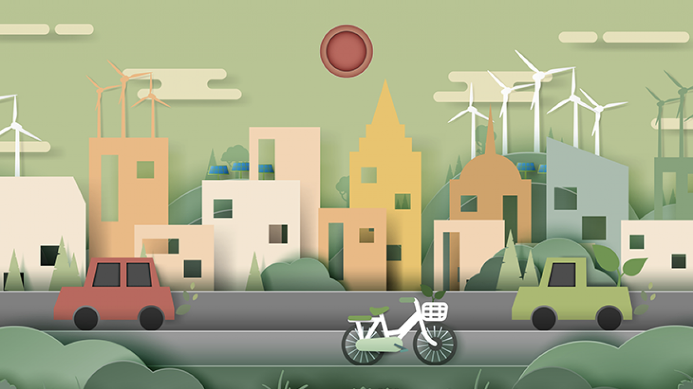
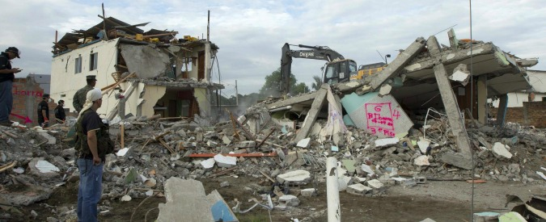

Il ruolo dei trasporti nello sviluppo sostenibile è stato riconosciuto per la prima volta al Vertice della Terra delle Nazioni Unite del 1992 e rafforzato nel suo documento finale - Agenda 21. JPOI ha fornito più punti di ancoraggio per il trasporto sostenibile, L'attenzione globale ai trasporti è continuata negli ultimi anni. I leader mondiali hanno riconosciuto all'unanimità alla Conferenza delle Nazioni Unite sullo sviluppo sostenibile del 2012 che i trasporti e la mobilità sono fondamentali per lo sviluppo sostenibile. Il trasporto sostenibile può favorire la crescita economica e migliorare l'accessibilità. Il trasporto sostenibile consente una migliore integrazione dell'economia nel rispetto dell'ambiente. Successivamente, il Segretario generale delle Nazioni Unite, nell'ambito della sua agenda d'azione quinquennale, ha identificato i trasporti come una componente importante dello sviluppo sostenibile. Le raccomandazioni politiche del gruppo consultivo sono state presentate al Segretario generale in un rapporto sulle prospettive globali del trasporto sostenibile, intitolato «Mobilizing Sustainable Transport for Development», pubblicato alla prima conferenza globale sul trasporto sostenibile nel novembre 2016. L'importanza del trasporto sostenibile per i paesi in situazioni speciali è riconosciuta anche dalla comunità internazionale, attraverso il Programma d'azione di Istanbul per i PMS, il Programma d'azione di Vienna per i PMS, il SAMOA Pathway for SIDS, il Sendai Framework for Disaster Risk Reduction , e la Nuova Agenda Urbana. Nell'Agenda 2030 per lo sviluppo sostenibile, il trasporto sostenibile è integrato in diversi SDG e obiettivi, in particolare quelli relativi alla sicurezza alimentare, alla salute, all'energia, alla crescita economica, alle infrastrutture, alle città e agli insediamenti umani.
La riduzione del rischio di catastrofi è parte integrante dello sviluppo sociale ed economico ed è essenziale se si vuole che lo sviluppo sia sostenibile per il futuro. Ciò è stato riconosciuto da numerosi documenti globali su DRR e sviluppo sostenibile. La strategia e il piano d'azione di Yokohama per un mondo più sicuro , come primo importante quadro internazionale per la riduzione del rischio di catastrofi, hanno riconosciuto l'interrelazione tra sviluppo sostenibile e DRR. Da allora, questa stretta interrelazione è stata continuamente rafforzata all'interno dei principali accordi globali, dagli MDG al Piano di attuazione di Johannesburg , al «Hyogo Framework for Action » e al «Future We Want » , al Sendai Framework for DRR e all'Agenda 2030 per lo sviluppo sostenibile . La Commissione delle Nazioni Unite per lo sviluppo sostenibile ha affrontato la gestione del rischio e la vulnerabilità nel contesto delle sue questioni tematiche di acqua, servizi igienici e insediamenti umani nel suo ciclo 2004-2005 e poi nel contesto della siccità e della desertificazione nel suo ciclo 2006-2007. L'Agenda 2030 per lo sviluppo sostenibile riconosce e ribadisce l'urgenza di ridurre il rischio di disastri. Gli obiettivi relativi alla promozione dell'istruzione per lo sviluppo sostenibile nell'ambito dell'SDG# 4, come la costruzione e il potenziamento di strutture educative e la garanzia di una vita sana, nonché gli obiettivi dell'SDG n. 9 riaffermano l'interrelazione tra riduzione del rischio di catastrofi e sviluppo sostenibile.
Le città sono centri di idee, commercio, cultura, scienza, produttività, sviluppo sociale, umano ed economico. Nel 2008, per la prima volta nella storia, la popolazione urbana globale superava in numero quella rurale. Con più della metà dell'umanità che vive nelle città e il numero di residenti urbani che cresce di quasi 73 milioni ogni anno, si stima che le aree urbane rappresentino il 70% del prodotto interno lordo mondiale e abbiano quindi generato crescita economica e prosperità per molti. Data l'importanza di questo argomento per gli sforzi di sviluppo globale, i recenti movimenti che spingono ad affrontare lo sviluppo sostenibile da una prospettiva urbana hanno avuto luogo in tutto il mondo. I risultati di questo movimento possono essere visti nell'inclusione di un obiettivo autonomo sulle città e lo sviluppo urbano nell'Agenda 2030, l'obiettivo di sviluppo sostenibile 11, «rendere le città e gli insediamenti umani inclusivi, sicuri, resilienti e sostenibili». C'è anche il riconoscimento della natura trasversale delle questioni urbane, che hanno un impatto su una serie di altri obiettivi di sviluppo sostenibile, inclusi gli SDG 1, 6, 7, 8, 9, 12, 15 e 17, tra gli altri. La Nuova Agenda Urbana complementare di UN-Habitat, adottata come documento finale della Conferenza Habitat III nel 2016, Prima dell'adozione dell'Agenda 2030, l'Obiettivo di Sviluppo del Millennio 7, obiettivo 11, ha lanciato un appello agli sforzi per raggiungere «un miglioramento significativo nella vita di almeno 100 milioni di abitanti delle baraccopoli» entro il 2020. Lo sviluppo sostenibile degli insediamenti umani è stato discusso anche nella seconda e terza sessione della Commissione sullo sviluppo sostenibile. Il paragrafo 89 dell'Agenda 2030 invita i principali gruppi e altre parti interessate, comprese le autorità locali, a riferire sul loro contributo all'attuazione dell'Agenda.